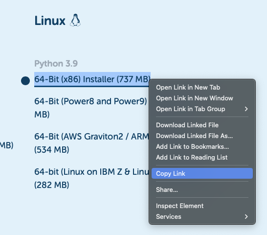
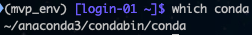

Installing Anaconda and Anaconda Environments
These are instructions for setting up a package management software called Anaconda on Discovery (or more generally any computer).
Below, if I want you to execute a terminal command, I’ll preface the command with “do” - eg “do ls”.
Most of us got started programming using the R app or RStudio. Unless things have changed, we were only able to use one version of R at a time. When I used them, I wasn’t able to have multiple versions installed (even if used one at a time).
However, in “practice” we may want to be able to use many versions of eg R at the exact same time (or at least the option to choose among versions), or install a workspace that is the same as it is somewhere else so that when we run code we don’t have to worry about program/package version differences affecting results. This is where Anaconda is really handy. If you’ve ever had to install terminal programs outside of a package manager or GUI install, you’ll know about the ‘dependency hell’ which is when you try to install something only to find out you need to install yet another version of this other program/package to work. And then find out about a dependency for the dependency. And so on. Anaconda helps sidestep this almost entirely, and makes creating new and multiple ‘environments’ a lot easier.
1. Install Anaconda
Connect to Discovery
First, do ssh discovery to connect to Discovery server (see here for advanced ssh-ing instructions).
Create folder for source code
When installing software, it’s generally convention to keep the “source code” in a folder called src in the home directory. If you don’t have it, create it: do mkdir ~/src
Then, change to the home directory: do cd ~/src
Download and transfer Anaconda installation file to discovery
In a web browser, navigate to anaconda’s website. Since Discovery has a linux environment, right click on the linux 64-bit (x86) and copy the link as in the screenshot.

Back in terminal, in your Discovery src directory, type wget, then a space, then paste the link you copied. Then hit enter. wget is a way to download files from web links. The command you execute should look something like wget https://repo.anaconda.com/archive/Anaconda3-2022.10-Linux-x86_64.sh.
- The file should download with a progress bar.
Install Anaconda
Once the file is downloaded, to install anaconda on discovery do: bash Anaconda3-2022.10-Linux-x86_64.sh (or use whatever the file name downloaded was). - Hit enter to go scroll the user agreement. then type ‘yes’ to agree at the bottom. - installing in $HOME/anaconda3 should be fine. Hit enter.
I think I remember there eventually being a prompt to instantiate conda in your ~/.bashrc. This will allow you to use anaconda when opening a new terminal tab/window/session (note you need to open a new window or do source ~/.bashrc for it to take effect). It should add something like this to your ~/.bashrc:
``` {style="background-color: gainsboro"}
# >>> conda initialize >>>
# !! Contents within this block are managed by 'conda init' !!
__conda_setup="$('/home/${USER}/anaconda3/bin/conda' 'shell.bash' 'hook' 2> /dev/null)"
if [ $? -eq 0 ]; then
eval "$__conda_setup"
else
if [ -f "/home/${USER}/anaconda3/etc/profile.d/conda.sh" ]; then
. "/home/${USER}/anaconda3/etc/profile.d/conda.sh"
else
export PATH="/home/${USER}/anaconda3/bin:$PATH"
fi
fi
unset __conda_setup
# <<< conda initialize <<<
```If this isn’t in your ~/.bashrc, then you can paste the text above. Normally $USER would be your username but written out, but we can use the $USER alias object since it will retrieve your username (try this by itelf echo $USER - this is your username on the system).
After opening a new terminal window/tab or sourcing ~/.bashrc, you should be able to get a path returned from which conda.

2. Creating Anaconda Environments
An Anaconda environment is a set of specific software and software versions + some hardware stuff that we really don’t have to worry about. Environments make sure all of the needed package versions and programs work as expected.
These instructions are based on those found here on Anaconda’s website.
Examples
If you end up creating these examples, you can always remove their folders later ( eg yes | rm -r ~/anaconda3/envs/first_env)
To create a blank environment (with some default package versions) that we can call first_env, we can do conda create --name first_env. This will create an environment whose files are located at ~/anaconda3/envs/first_env.
To create an environment with a specific version of python we can do eg conda create --name pyenv python=3.8.2 - these files will be located at ~/anaconda3/envs/pyenv.
To create an environment with a specific version of R, first create a blank environment. Activate it (see below in next substep), then do eg conda install -c conda-forge r-base=3.5.1. This uses a ‘channel’ called conda-forge, if the previous command gives you an error you may first have to do conda config --add channels conda-forge to add the channel.
To copy an environment to another computer, conda can create a .yml file. To export an env (after activating) do conda env export > environment.yml or whatever.yml filename you want. To create that env elsewhere, do this on the other computer: conda env create -f environment.yml.
To use an environment (ie ‘activate’ it): do conda activate envname. And the env name should appear to the left of your terminal prompt.